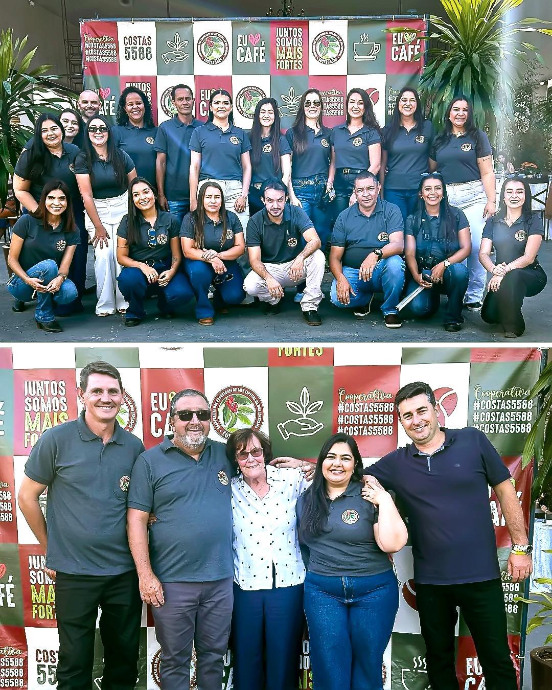

<section class="container-card">
    <!--Card-->
    <div class="card">
        <div class="galeria-wrapper">
            <button class="seta externa esquerda anterior" type="button">
                <i class="fa-solid fa-circle-chevron-left"></i>
            </button>
            <div class="carrossel">
                
                
                
                <div class="video-wrapper">
                    <video src="../videos/coopcostas-2025.mp4" muted autoplay loop playsinline
                        controlslist="nodownload nofullscreen noremoteplay">
                        Seu navegador não suporta vídeos HTML5.
                    </video>
                    <div class="play-overlay"><i class="fas fa-play-circle"></i></div>
                    <div class="video-controles">
                        <button class="botao-controle mute" title="Silenciar">
                            <i class="fas fa-volume-mute"></i></i>
                        </button>
                        <button class="botao-controle fullscreen" title="Tela cheia">
                            <i class="fas fa-expand"></i>
                        </button>
                    </div>
                </div>
            </div>
            <button class="seta externa direita proximo" type="button">
                <i class="fa-solid fa-circle-chevron-right"></i>
            </button>
            <div class="indicadores"></div>
        </div>

        <div class="legenda-fixa ordem">
            <h3>11ª Confraternização - Cooperativa dos Costas</h3>
            <p>
                No sábado, 24 de maio, aconteceu a <strong>11ª Confraternização</strong> da
                <a class="link" href="https://www.instagram.com/p/DKKvY7yu4Jf/" target="_blank"
                    rel="noopener noreferrer">
                    Cooperativa dos Costas
                </a>, em Boa Esperança/MG. O evento contou com sorteios de brindes, atividades para as crianças e
                apresentações musicais, incluindo a participação da dupla Simão Breno & Júnior. Foi um momento de
                confraternização e integração entre as famílias cooperadas.
            </p>
        </div>
    </div>
</section>